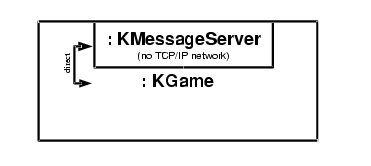

<<more code about KGame, an easy example>>
A network game is a game with usually several players, that are on different computers. These computers are usually connected to the internet, and all the moves a player does are exchanged over this network.
The exchange of moves and other information is done using the class KMessageServer. An object of this class is a server that waits for connections. Someone who wants to take part in the game has to connect to this server - usually using an internet socket connection. He does this by creating a KMessageClient object. This object connects to the message server.
The transfer of data is realised by subclasses of the abstract class KMessageIO. One object of this class is created on the client side, one on the server side. Different types of networks can be supported by creating new subclasses of KMessageIO. There are already two subclasses of KMessageIO: KMessageSocket uses a internet socket connection to transfer the data from the message client to the message server or vice versa. KMessageDirect can be used if both the message server and the message client are within the same process. The data blocks are copied directly to the other side, so the transfer is faster and needs no network bandwidth.
A typical network game situation could look like this:
Here, three KGame object (called message clients) are connected to the KMessageServer object. One is in the same process, so it uses KMessageDirect. The other two use KMessageSocket, so an internet socket connection is used. KGame doesn't talk directly to the message server, but uses a KMessageClient object instead. One of the KMessageClient objects is the admin of the message server. This client has some priviledges. It may e.g. kill the connection to other message clients, or limit the number of clients that may connect.
The KGame objects are by default all equal. So the usual approach will be that every KGame object will store the complete status of the game, and any change or move will be broadcasted to the other KGame objects, so that they all change the status in identical ways. Sometimes it may be necessary (or just easier to implement) that one KGame object is a game server (i.e. he is repsonsible for everything, he coordinates the complete game and stores the game status), whereas the other KGame objects are only dumb stubs that are used to contact the game server. You can implement both approaches using the message server structure. If you need to elect the KGame object that shall be the game server, you may e.g. use the one that has the KMessageClient that is the admin of the message server. (Of course this is only a suggestion, you can use other approaches.)
The main principle when developing the message server/client structure was, that the message server doesn't have any idea of the game and its rules that is played. The message server only forwards messages from one message client to the others without interpreting or manipulating the data. So always keep in mind that the message server is not a game server! It does not store any data about the game status. It is only a server for network connections and message broadcasting, not for game purposes. The reason for this principle is, that any game can be played using a KMessageServer on any computer. The computer being the message server doesn't need to know anything about the game that is played on it. So you don't have to install new versions of the game there. Only the clients need to be game specific.
Usually you don't need to create KMessageServer or KMessageClient objects in your game, since KGame does this for you. There are three different scenarios fo network games that are all supported in KGame:
Scenario 1: local game
The local game should always be the default state a game should be in. To avoid having this scenario as a special case, KGame automatically creates a KMessageServer object and a KMessageClient object. So every change and every move is sent to the message server and is returned to the KGame object before it is processed. Since the connection between the message client and the message server uses KMessageDirect the data transfer is very fast and wont hurt in most cases.

This is the default situation right after creating the KGame object.
Scenario 2: network game, started by one player
If one user is bored of playing alone, he can open his game for connections from the outside world.
He listens to a TCP/IP socket port (i.e. a number between 0 and 65535). Other players can create
KGame objects of their own and connect to this port. They need to know the IP address of that computer
and the port number. This situation will have this structure:

The first player has to do something like:
KGame *myGame = new KGame ();
// wait for connections on port 12345
myGame->offerConnections (12345);
And the other players have to do something like:
KGame *myGame = new KGame ();
// connect to the message server
myGame->connectToServer ("theServer.theDomain.com", 12345);
This automatically removes the message server in these KGame objects and connects to the given
one instead.Scenario 3: network game, using a stand alone message server
Sometimes it is not possible to let the message server run on one of the players computer. If e.g. all the players have their computer in a local network that uses masquerading to contact the internet, other computers cannot connect to them since the computer doesn't have a IP address to the outside world. Then the only way to play a network game is to have a standalone KMessageServer object on another server computer (somthing like "games.kde.org" e.g.). Since the KMessageServer isn't game specific at all, every game can be played using it. There doesn't have to be any special software installed on that server computer, only the program creating a KMessageServer object.
This scenario has some more advantages: The message server can be a well known meeting point to
start a game. This way one could play games against other players you never knew before. Furthermore
the game is stopped brutally when the program that contains the message server in scenario 2 is
quitted. (Migration of message servers is not yet implemented, but may be in the future.) Using a
stand alone message server, the players may enter and leave the game as they want.

To create this scenario, a special KMessageServer program has to be started on the computer that shall be the stand alone message server:
% kmessageserver -port=12345
The other games that want to connect have to do this (supposed the stand alone message server
has the IP address "games.kde.org"):
KGame *myGame = new KGame ();
// connect to the message server
myGame->connectToServer ("games.kde.org", 12345);